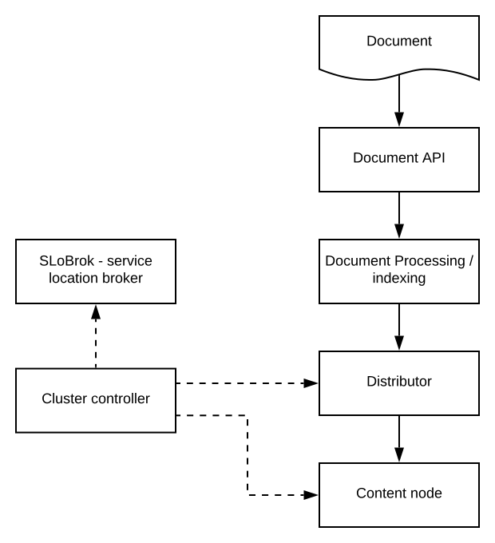

Refer to administrative procedures for configuration and state monitoring / management.
Refer to writing documents for an overview of the Document API flow. Content cluster nodes are distributor, content node and cluster controller:
Content and distributor nodes have state:
| Up | The node is up and available to keep buckets and serve requests. |
|---|---|
| Down | The node is not available, and can not be used. |
| Initializing | The node is starting up. It knows what buckets it stores data for, and may serve requests, but it does not know the metadata for all its buckets yet, such as checksums and document counts. The node is available for bucket placement. |
| Stopping | This node is stopping and is expected to be down soon. This state is typically only exposed to the cluster controller to tell why the node stopped. The cluster controller will expose the node as down or in maintenance mode for the rest of the cluster. This state is thus not seen by the distribution algorithm. |
| Maintenance | This node is temporarily unavailable. The node is available for bucket placement, redundancy is hence lower. Using this mode, new replicas of the documents stored on this node will not be created, allowing the node to be down with less of a performance impact on the rest of the cluster. This mode is typically used to mask a down state during controlled node restarts, or by an administrator that need to do some short maintenance work, like upgrading software or restart the node. |
| Retired | A retired node is available and serves requests. This state is used to remove nodes while keeping redundancy. Buckets are moved to other nodes (with low priority), until empty. Special considerations apply when using grouped distribution as buckets are not necessarily removed. |
Distributor nodes start / transfer buckets quickly and are hence not in maintenance or retired.
There are three kinds of state:
| Unit state |
The cluster controller fetches states from all nodes, called unit states. States reported from the nodes are either initializing, up or stopping. If the node can not be reached, a down state is assumed. This means, the cluster controller detects failed nodes. The subsequent generated states will hence have nodes in down, and the ideal state algorithm will redistribute buckets of documents. |
|---|---|
| User state |
user state must be one of up, down, maintenance or retired:
|
| Generated state |
The cluster controller generates the cluster state from the unit and user states, over time. The generated state is called the cluster state. |
For new cluster states, the cluster state version is upped, and the new cluster state is broadcasted to all nodes. There is a minimum time between each cluster state change.
It is possible to set a minimum capacity for the cluster state to be up. If a cluster has so many nodes unavailable that it is considered down, the state of each nodes is irrelevant, and thus new cluster states will not be created and broadcasted before enough nodes are back for the cluster to come back up. A cluster state indicating the entire cluster is down, may thus have outdated data on the node level.
The main task of the cluster controller is to maintain the cluster state. This is done by polling nodes for state, generating a cluster state, which is then broadcast to all the content nodes in the cluster. Note that clients do not interface with the cluster controller - they get the cluster state from the distributors - details.
| Node state polling |
The cluster controller polls nodes, sending the current cluster state. If the cluster state is no longer correct, the node returns correct information immediately. If the state is correct, the request lingers on the node, such that the node can reply to it immediately if its state changes. After a while, the cluster controller will send a new state request to the node, even with one pending. This triggers a reply to the lingering request and makes the new one linger instead. Hence, nodes have a pending state request. During a controlled node shutdown, it starts the shutdown process by responding to the pending state request that it is now stopping. Note: As controlled restarts or shutdowns are implemented as TERM signals from the config-sentinel, the cluster controller is not able to differ between controlled and other shutdowns. |
|---|---|
| Cluster state generation |
The cluster controller translates unit and user states into the generated cluster state |
| Cluster state broadcast |
When node unit states are received, a cluster controller internal cluster state is updated. New cluster states are distributed with a minimum interval between. A grace period per unit state too - e.g, distributors and content nodes that are on the same node often stop at the same time. The version number is upped, and the new cluster state is broadcast. If cluster state version is reset, clients to distributors can temporarily fail operations in the transition, but will eventually converge on the new (lower) cluster state version. |
Vespa can be configured with one cluster controller. Reads and writes will work well in case of cluster controller down, but other changes to the cluster (like a content node down) will not be handled. It is hence recommended to configure a set of cluster controllers.
The cluster controller nodes elect a master, which does the node polling and cluster state broadcast. The other cluster controller nodes only exist to do master election and potentially take over if the master dies.
All cluster controllers will vote for cluster controller with the lowest index that says it is ready. If a cluster controller has more than half of the votes, it will be elected master. As a majority vote is required, the number of cluster controllers should be an odd number of 3 or greater. A fresh master will not broadcast states before a transition time is passed, allowing an old master to have some time to realize it is no longer the master.
Document operations are mapped to content nodes based on bucket locations - each put/update/get/remove is mapped to a bucket and sent to the right content nodes. To manage the document set as it grows and nodes change, buckets move. I.e, sets of documents (a bucket) is copied between nodes for redundancy / redistribution for growth / node failures.
Buckets are mapped to distributors using the ideal state algorithm. As the cluster state changes, buckets are re-mapped immediately. The mapping does not overlap - a bucket is owned by one distributor.
Distributors do not persist the bucket database, the bucket-to-content-node mapping is stored in memory in the distributor. Document count, persisted size and a metadata checksum per bucket is stored as well. At distributor (re)start, content nodes are polled for bucket information, and return which buckets are owned by this distributor (using the ideal state algorithm). There is hence no master / name node in Vespa. Likewise, at any distributor cluster state change, content nodes are polled for bucket handover - a distributor will then handle a new set of buckets.
Document API clients do not interface with the cluster controller, and does hence not know the cluster start at startup. A random distributor is used first. If the document operation hit the wrong distributor, WRONG_DISTRIBUTION is returned, with the current cluster state. WRONG_DISTRIBUTION is hence expected and normal at cold start / state change events.
Distributors track which content nodes have which buckets in their bucket batabase. Distributors then use the ideal state algorithm to generate bucket maintenance operations. A stable system has all buckets located per the ideal state:
The Document API uses the document identifier to implement ordering. Documents with the same identifier will have the same serialize id, and a Document API client will ensure that only one operation with a given serialize id is pending at the same time. This ensures that if a client sends multiple operations for the same document, they will be processed in a defined order.
Note: If sending two put operations to the same document, and the first operation fails, the second operation that was enqueued is sent. If the client chooses to just resend the failed request, the order of operations has been switched.
If different clients have pending operations on the same document, the order is undefined.
Write operations like put, update and remove, have a timestamp assigned, passing through the distributor. The timestamp is guaranteed to be unique within the bucket where it is stored. The timestamp is used by the content layer to decide which operation is newest. These timestamps may be used when visiting, to only process/retrieve documents within a given timeframe. To guarantee unique timestamps, they are in microseconds, and the microsecond part may be generated or altered to avoid conflicts with other documents.
The internal timestamp is often referred to as the last modified time. This is the time of the last write operation going through the distributor. If documents are migrated from cluster to cluster, the target cluster will have new timestamps for their entries, and when reprocessing documents within a cluster, documents will have new timestamps even if not modified.